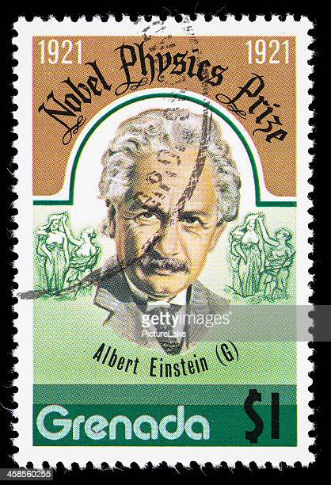
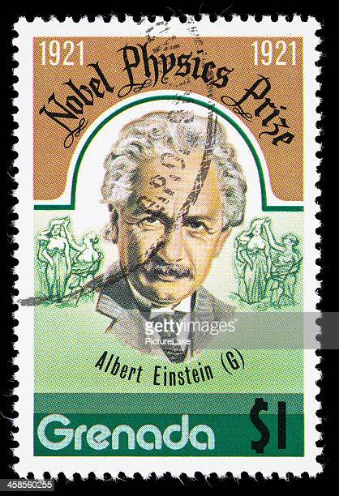

Albert Einstein: A Brief History
Albert Einstein, born on March 14, 1879, in Ulm, Germany, was a renowned physicist and one of the greatest scientific minds in history. He developed the theory of relativity, which revolutionized our understanding of space, time, and gravity.
Einstein's educational journey began at the Swiss Federal Polytechnic in Zurich, where he studied physics and mathematics. After graduating, he worked as a patent examiner at the Swiss Patent Office, where he made significant contributions to theoretical physics during his spare time.
In 1905, Einstein published four groundbreaking papers, including the theory of special relativity and the famous equation E=mc². These works established him as a leading physicist and earned him international recognition.
Throughout his life, Einstein received numerous honors and awards, including the Nobel Prize in Physics in 1921 for his explanation of the photoelectric effect. His contributions to science and his advocacy for peace and human rights left an indelible mark on the world.
Albert Einstein passed away on April 18, 1955, in Princeton, New Jersey, leaving behind a legacy that continues to inspire scientists, thinkers, and dreamers to this day.
ALBERT EINSTEIN GALLERY
GROWTH TIMELINE

Education and Struggle in Career
Albert Einstein's journey in education and career was marked by both challenges and remarkable achievements. Despite facing difficulties, he excelled in his studies and made significant contributions to the field of physics.
During his early years, Einstein attended the Swiss Federal Polytechnic in Zurich, where he studied physics and mathematics. He faced financial hardships but persevered in his pursuit of knowledge.
After completing his education, Einstein struggled to find employment initially. However, he eventually secured a position as a patent examiner at the Swiss Patent Office, where he had time to develop his scientific ideas.
It was during this time that Einstein published his groundbreaking papers on the theory of relativity, which revolutionized physics and established him as a leading scientist.
Period of Great Research and Works
Albert Einstein's period of great research and works spanned several areas, leading to world-renowned discoveries that revolutionized our understanding of the universe.
1. Theory of Relativity: Einstein's theory of relativity, developed in the early 20th century, transformed our understanding of space, time, and gravity. His general theory of relativity, published in 1915, provided a new understanding of gravity, describing it as the curvature of spacetime.
2. Photoelectric Effect: In 1905, Einstein's explanation of the photoelectric effect earned him the Nobel Prize in Physics. His work demonstrated that light consists of discrete particles called photons, and the energy of these photons is directly proportional to their frequency.
3. Brownian Motion: Einstein's study of Brownian motion, published in 1905, provided evidence for the existence of atoms and molecules. His work explained the random motion of particles suspended in a fluid, supporting the atomic theory.
4. Quantum Theory: Einstein's contributions to quantum theory challenged the prevailing understanding of quantum mechanics. He proposed thought experiments, such as the famous Einstein-Podolsky-Rosen (EPR) paradox, to highlight the incompleteness of quantum mechanics and advocate for a deterministic view of the universe.
Awards and Honours
Albert Einstein's remarkable contributions to science earned him numerous awards and honours throughout his lifetime. One of the most significant accolades he received was the Nobel Prize in Physics.
The Nobel Prize was awarded to Einstein in 1921 for his explanation of the photoelectric effect, which laid the foundation for the development of quantum mechanics. This groundbreaking work demonstrated the particle-like nature of light and its interaction with matter.
In addition to the Nobel Prize, Einstein received several other prestigious awards, including the Copley Medal from the Royal Society, the Franklin Medal, and the Gold Medal of the Royal Astronomical Society.
 

REFERENCES
- NOBELPRIZE ORG - Provided valuable information on Albert Einstein history and Noble Prize Award
- BRITANNICA WEBSITE - Provided images and content about Albert Einstein
- GETTYIMAGES WEBSITE - Provided images used in the website